We turn agricultural rice husk waste into safe, durable, beautiful plant-fiber tableware. BPA-free, biodegradable, food-grade — manufactured in our 5,000 m² facility and shipped to customers across the globe.
From chopping boards to kids sets — reusable, healthy and stylish plant-fiber solutions for every table.
.jpg)
Durable, knife-scratch resistant cutting board that's easy to clean.
View details →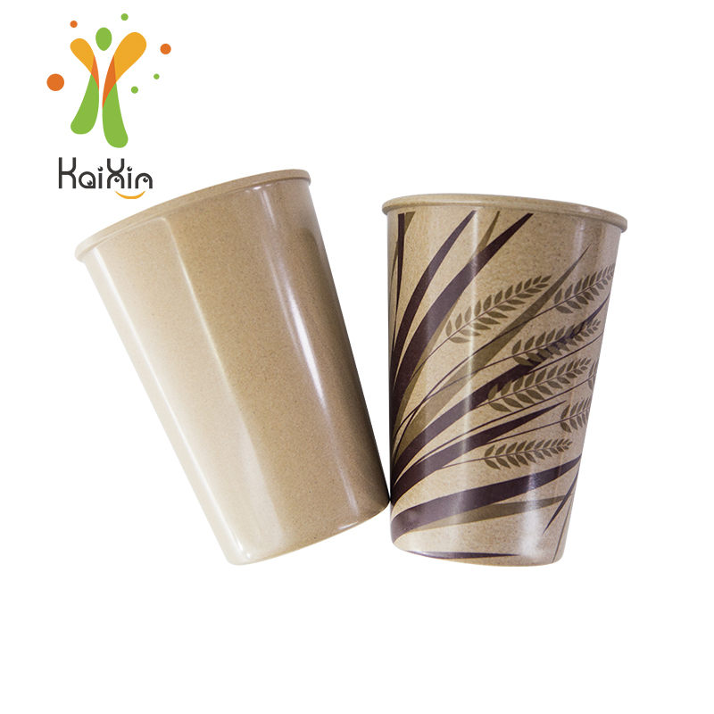
4 sizes from 10oz to 16oz, lightweight and heat-insulating.
View details →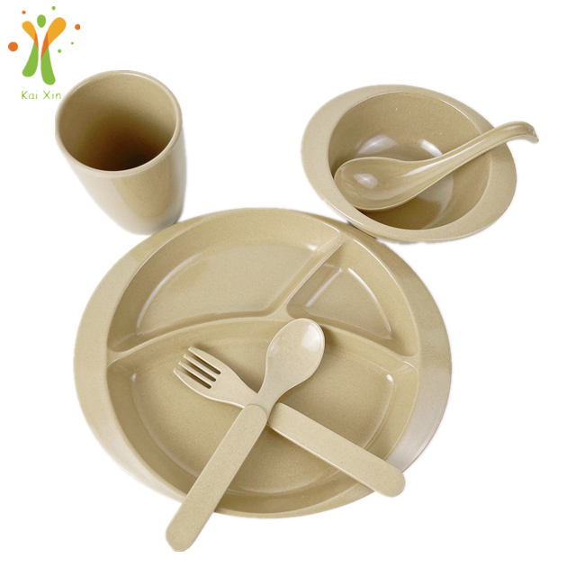
Complete safe tableware set designed for little hands.
View details →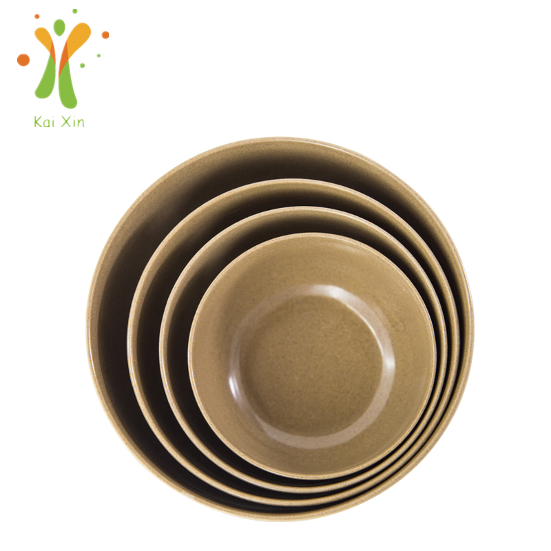
4 capacities 200–750ml, smooth and break-resistant.
View details →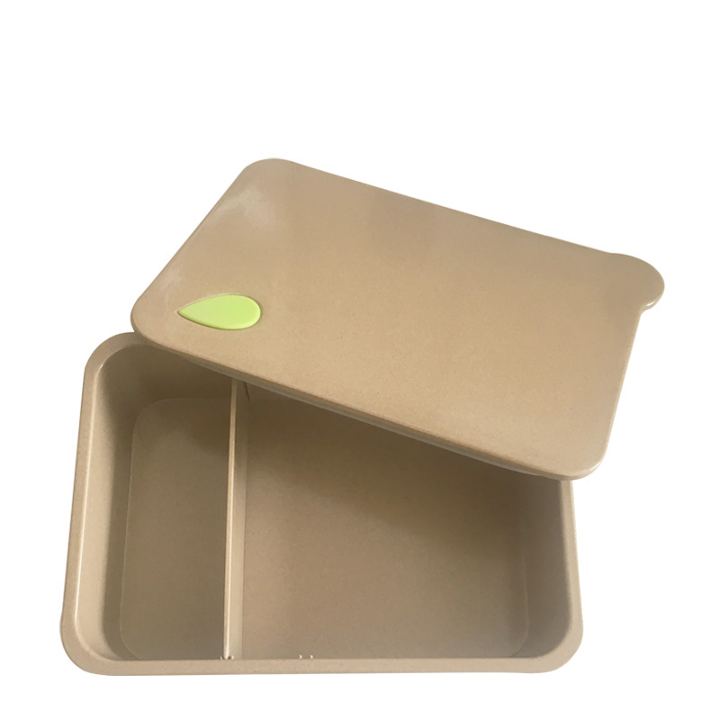
Leak-friendly, compact and reusable meal container.
View details →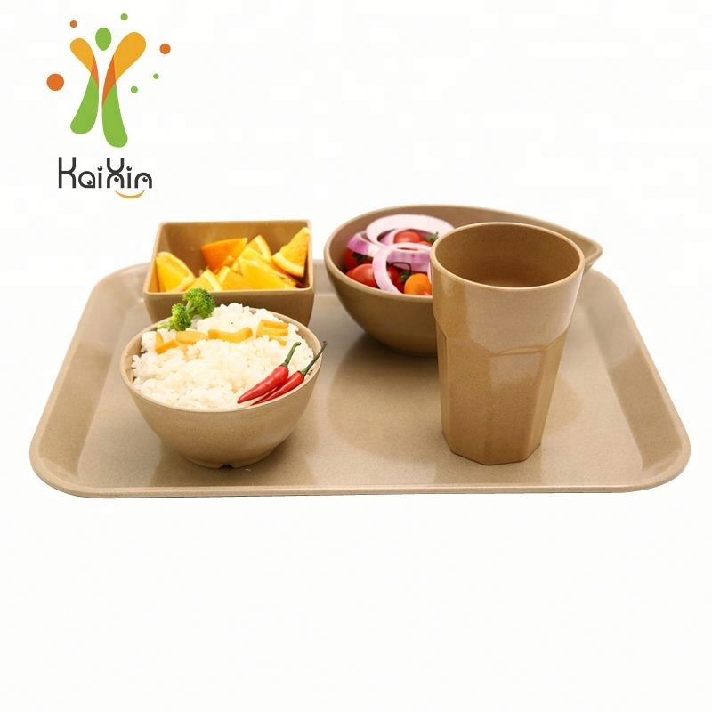
Elegant 410mm tray for serving and presentation.
View details →Our raw material is rice husk — a natural by-product of rice harvesting that used to be burned or discarded. We give this agricultural waste a second life as safe, beautiful, reusable tableware, turning farm residue into everyday products instead of air pollution.
Raw rice husk is purified, blended with 20% food-grade starch as a natural binder, then molded under high temperature and high pressure — with no glue and no harmful chemical additives.
Our products are tested and certified to meet global food-safety standards.
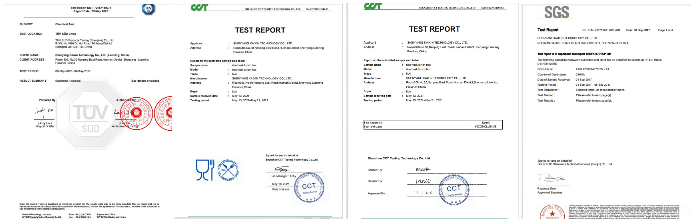
SGSCertified testing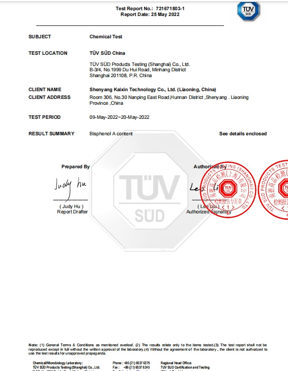
BPA FreeNo bisphenol-A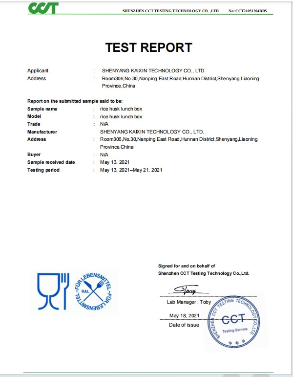
LFGBGerman food standard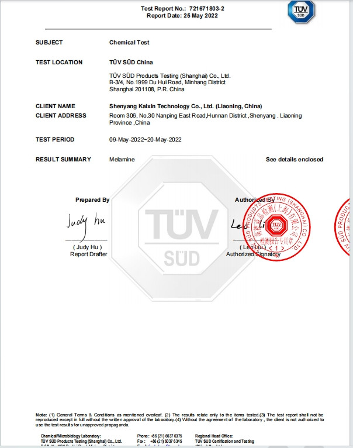
Melamine FreeNo melamine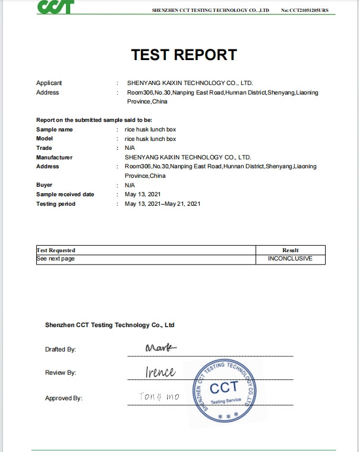
REACHEU chemical regulation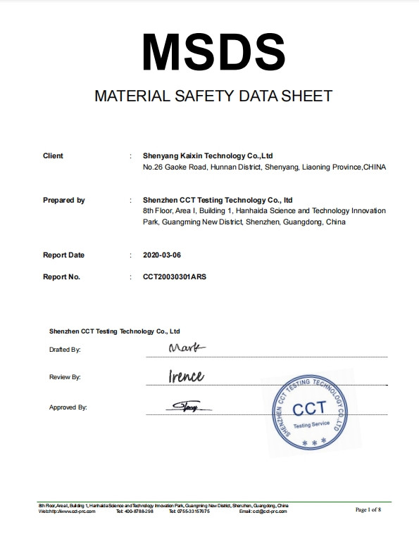
MSDSMaterial safety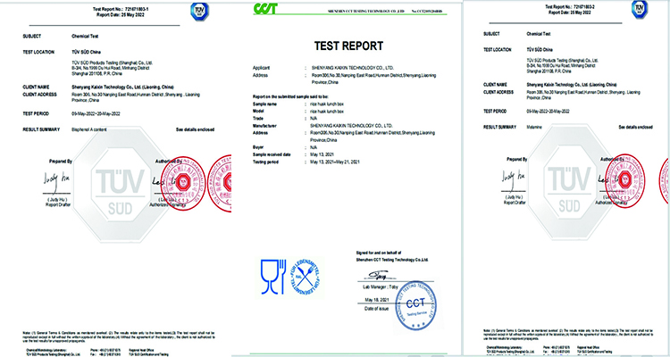
Food SafeFood-contact compliant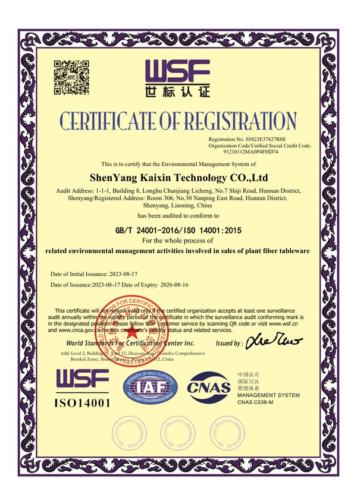
ISO 14001Environmental management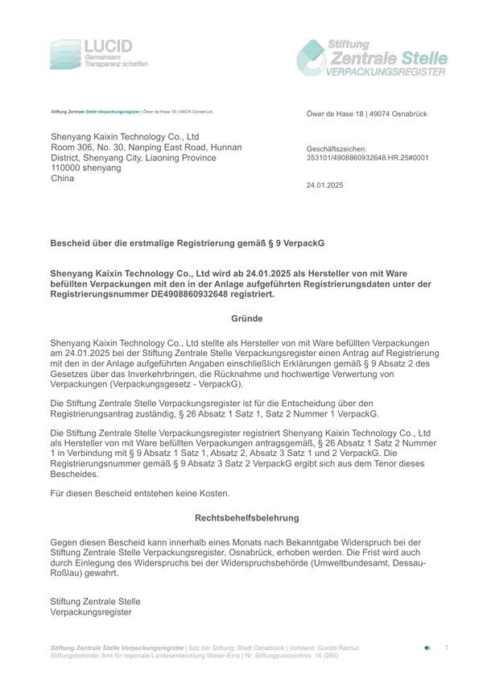
German ERPPackaging registration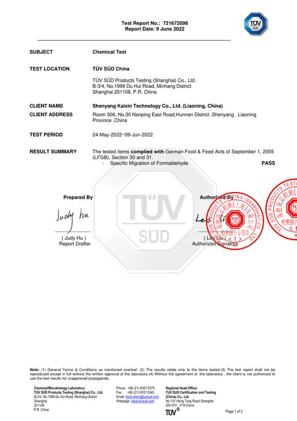
Formaldehyde TestMigration compliant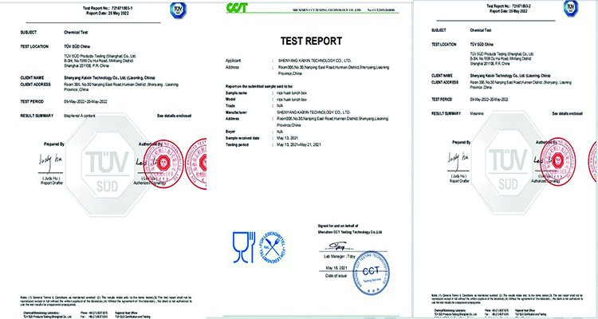
TÜV/CCTChemical test reportTell us your product, size and packaging needs — we'll get back to you with a tailored OEM/ODM quote.
Practical guides and product knowledge to help you choose and sell eco-friendly rice husk tableware.
A complete 2026 buyer's guide to plant-fiber dinnerware — materials, benefits and sourcing tips.
Read article →Which eco tableware actually wins on durability, safety and sustainability? We compare all three.
Read article →BPA is still hiding in everyday plastic tableware. Here is why BPA-free is the safer choice.
Read article →